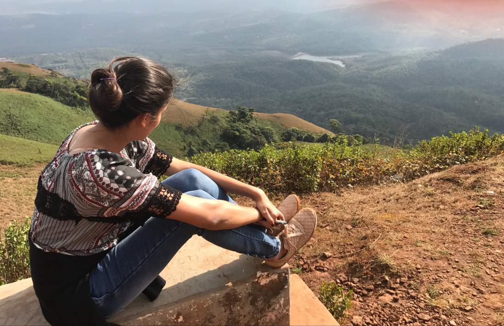

You’ve spent years dreading for this phase of your life. And it always looked so dreamy. So glamorous. So filled with love, laughter and freedom.
Yet here you are. With knowledge that it’s anything but.
It’s freedom with responsibilities and life is no longer what it seemed.
You’re in your 20’s and chances are you’re as confused as me. The question “So where do you see yourself in 5 years?” ignites an auto-response self-pity laugh and mini anxiety attack all at once. You start questioning about your life every now and then.
You spend most days at home because by the time you come back from office or college, you’re too tired to do anything.
Sometimes you want to take it easy and just chill but the next minute, you’re out there stressing more because you’re not working on what’s already making you stressed.
Do it very soon. Don’t be scared. Know that it’s okay to be confused. CONFUSION is the beginning of CLARITY. It is important to keep moving forward and taking bold steps for the next few years. For at 27, your parents might just begin chasing girls / boys for you and your dreams might take a backseat! (Or you may start to dream bigger! )
I keep asking my friends what life is for them. Most of the answers revolve around:
“Life is tough” — that’s most of our favourite form of expression towards our existence these days, isn’t it?
Tough because we can’t stop thinking about what’s coming our way. Tough because we spent the past few years in denial, in denial that we are growing up. In denial that we want to make it big but don’t know how.
You’re at an age where you can make it or break it. It’s better to break it and then make it because you learn from that. It’s stressful but trust me, it’s sweet.
Now is a greatest time to think hard about what you want and then have the fearless courage to chase that dream.
No no. By that I don’t mean “To figure it out” should be our goal. If this were our goal, we would go to our grave still with questions.
The goal should instead be to continue living, learning, and moving forward.
The choice is ours: We can worry about not having it together, or we can live each day to its fullest by taking inspired action toward our dream life. So please, don’t hate yourself. And don’t stop. Don’t stop loving with all you have. Don’t stop wishing on every shooting star. Don’t stop dreaming of fairy tales.
You have so much left to do. You have a world filled with life waiting to happen. You have books to be read. Steps to be taken. Places to visit. People to meet. You haven’t lived half your life yet. There’s so much ahead. And in ten years, when you look back, you’ll wish you were here again. ( Just like how you wish you were back in High School.)
So don’t waste time being sad. Don’t lose yourself to your self-pity and non-existent boundaries. Use everyday. And I don’t mean spend thousands of dollars and visit the North Pole. I know how you’re struggling to make ends meet.
Do the simple things. Stop procrastinating. Take a walk with nature. Go to the gym. Read your favorite book for the millionth time. Watch a movie. Buy your favourite perfume. Eat like there is no tomorrow. And most importantly, make mistakes. Your heart will heal. But today will never be back again. Don’t live with “Could-have-been’s.” Take chances.
You deserve to live life and be happy. To make memories so wild, you’ll be the coolest grandparent they’ve ever known.
Breathe because It’s only your 20’s.
You’re going to be alright.